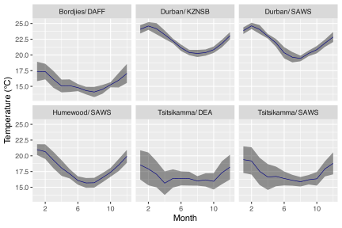
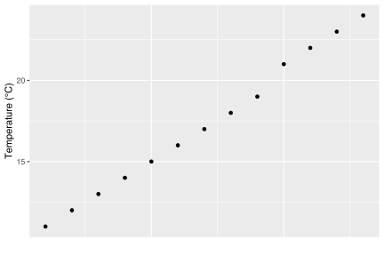
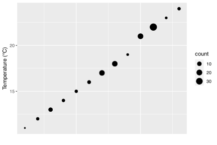
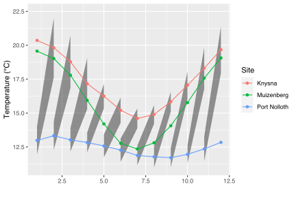

13. Tidiest data
Getting fully obsessive-compulsive
![]()
“Conducting data analysis is like drinking a fine wine. It is important to swirl and sniff the wine, to unpack the complex bouquet and to appreciate the experience. Gulping the wine doesn’t work.”
— Daniel B. Wright
“If you torture the data long enough, it will confess to anything.”
— Ronald Coase
In the previous session you covered the five main transformation functions you would use in a typical tidy workflow. But to really unlock their power you need to learn how to use them with group_by(). This is how you may calculate statistics based on the different grouping variables within your data, such as sites or species or soil types, for example. Let’s begin by loading the tidyverse package and the SACTN data if you haven’t already.
Group observations (rows) by variables (columns) with group_by()
With the SACTN dataset loaded you will now look at the effect that group_by has on other tidyverse functions. First you will create a new object called SACTN_depth. If you look at this object in the RStudio GUI it will not appear to be any different from SACTN. You may think of group_by() as working behind the scenes in order to better support the five main functions. You will see that group_by() is working as intended when you create summaries from the SACTN_depth dataframe. Remember that you do not need to put the last bracket own it’s own line. I like to do so in order to reduce the chances that I will forget to type it after the final argument within the last function in the code chunk.
# Group by depth
SACTN_depth <- SACTN %>%
group_by(depth)
# Calculate mean temperature by depth
SACTN_depth_mean <- SACTN_depth %>%
summarise(mean_temp = mean(temp, na.rm = TRUE),
count = n()
)
# Visualise the results
SACTN_depth_meanR> # A tibble: 13 × 3
R> depth mean_temp count
R> <dbl> <dbl> <int>
R> 1 0 19.5 26299
R> 2 2 13.0 237
R> 3 3 17.6 141
R> 4 4 16.6 529
R> 5 5 15.0 408
R> 6 7 17.2 227
R> 7 8 17.8 201
R> 8 9 13.8 311
R> 9 10 19.5 362
R> 10 12 24.3 137
R> 11 14 22.3 223
R> 12 18 24.4 191
R> 13 28 14.8 306Let’s visualise the newly created summary dataframe and see what’ we get’s there.
# Why does the relationship between depth and temperature look so odd?
ggplot(data = SACTN_depth_mean, mapping = aes(x = depth, y = mean_temp)) +
geom_point(aes(size = count), alpha = 1/3) +
geom_smooth(se = FALSE)
Grouping by multiple variables
As you may have guessed by now, grouping is not confined to a single column. One may use any number of columns to perform elaborate grouping measures. Let’s look at some ways of doing this with the SACTN data.
Now that you’ve created some grouped dataframes, let’s think of some ways to summarise these data.
Ungrouping
Once you level up our tidyverse skills you will routinely be grouping variables while calculating statistics. This then poses the problem of losing track of which dataframes are grouped and which aren’t. Happily, to remove any grouping we just use ungroup(). No arguments required, just the empty function by itself. Too easy.
Chain functions with the pipe (%>%)
This now brings you to the last major concept you need to become confident with for this workshop. Everything you have learned thus far builds on everything else in a modular way, with most concepts and steps therein being interchangeable. The pipe takes all of the things we have learned and takes them to the next level. And the best part about it is that it requires us to learn nothing new. You’ve been doing it all along, perhaps without even realising it. Let’s see what I mean. The following chunk does in one command what the first chunk in the previous section took two steps. This is not only faster, but saves you from having to create intermediate dataframes that only slow down our computer and clog up your environment.
Take a moment and compare the SACTN_depth_mean_2 object that you’ve just created against the SACTN_depth_mean object you created at the beginning of this session. Same same.
Not only does this keep your workflow tidier, it also makes it easier to read for yourselves, your colleagues, and most importantly, your future selves. When you look at the previous code chunk you can think of it as a paragraph in a research report, with each line a sentence. If I were to interpret this chunk of code in plain English I think it would sound something like this:
In order to create the SACTN_depth_mean_2 dataframe I first started by taking the original SACTN data. I then grouped the data into different depth categories. After this I calculated the mean temperature for each depth category, as well as counting the number of observations within each depth group.
Just like paragraphs in a human language may vary in length, so too may code chunks. There really is no limit. This is not to say that it is encouraged to attempt to reproduce a code chunk of comparable length to anything Marcel Proust would have written. It is helpful to break things up into pieces of a certain size. What that size is though is open to the discretion of the person writing the code. It is up to you to find out for yourself what works best for you.
Group all the functions!
You’ve played around quite a bit with grouping and summarising, but that’s not all you can do. You can use group_by() very nicely with filter() and mutate() as well.
You can do some rather imaginative things when you combine all of these tools together. In fact, you should be able to accomplish almost any task you can think of. For example, what if you wanted to create a new object that is a subset of only the sites in the SACTN that had at least 30 years (360 months) of data?
Or what if we wanted to calculate anomaly data for each site?
Now, let’s select only two sites and calculate their mean and standard deviations. Note how whichever columns you give to group_by() will be carried over into the new dataframe created by summarise().
SACTN %>%
filter(site == "Paternoster" | site == "Oudekraal") %>%
group_by(site, src) %>%
summarise(mean_temp = mean(temp, na.rm = TRUE),
sd_temp = sd(temp, na.rm = TRUE))R> # A tibble: 3 × 4
R> # Groups: site [2]
R> site src mean_temp sd_temp
R> <fct> <chr> <dbl> <dbl>
R> 1 Paternoster DEA 12.8 0.879
R> 2 Paternoster SAWS 13.6 1.40
R> 3 Oudekraal DAFF 12.3 1.36Going deeper
You learned in the previous session that you should avoid using comparison operators to compare logical arguments as this tends to not produce the results you would expect. Below you will see what happens when you try to repeat the code chunk above, but using a logical operator within a comparison operator.
Oh no, you broke it! This is a common error while learning to write code so do try to keep this rule in mind as it can cause a lot of headaches. An easy way to spot this problem is if your line of code has more logical operators than comparison operators you’re probably going to have a bad time. This is doubly unfortunate as you would need to write less code if this were not so. Happily, there is a shortcut for just this problem, %in%. Whenever you want to use operators to filter by more than two things, it is most convenient to create an object that contains the names or numbers that you want to filter by. You then replace your comparison and logical operators with that one simple symbol (%in%).
# First create a character vector containing the desired sites
selected_sites <- c("Paternoster", "Oudekraal", "Muizenberg", "Humewood")
# Then calculate the statistics
SACTN %>%
filter(site %in% selected_sites) %>%
group_by(site, src) %>%
summarise(mean_temp = mean(temp, na.rm = TRUE),
sd_temp = sd(temp, na.rm = TRUE))R> # A tibble: 5 × 4
R> # Groups: site [4]
R> site src mean_temp sd_temp
R> <fct> <chr> <dbl> <dbl>
R> 1 Paternoster DEA 12.8 0.879
R> 2 Paternoster SAWS 13.6 1.40
R> 3 Oudekraal DAFF 12.3 1.36
R> 4 Muizenberg SAWS 15.9 2.76
R> 5 Humewood SAWS 18.0 2.03The %in% operator can be a very useful shortcut, but sometimes you cannot avoid the comparison and logical operator dance. For example, if you wanted to find temperatures at Port Nolloth that were over 10°C but under 15°C you could use either of the following two filters. Remember that whenever you see a , in the filter function it is the same as the & logical operator. Of the two different techniques shown below, I would be more inclined to use the first one. The fewer symbols you use to write your code the better. Both for readability and error reduction.
As you may imagine, performing intricate logical arguments like this may get out of hand rather quickly. It is advisable to save intermediate steps in a complex workflow to avoid too much heartache. Where exactly these ‘fire breaks’ should be made is up to the person writing the code.
Pipe into ggplot2
It is also possible to combine piped code chunks and ggplot2 chunks into one ‘combi-chunk’. I prefer not to do this as I like saving the new dataframe I have created as an object in my environment before visualising it so that if anything has gone wrong (as things tend to do) I can more easily find the problem.
Regardless of what you may or may not prefer to do, the one thing that must be mentioned about piping into ggplot2 is that when you start with the ggplot() function you switch over from the pipe (%>%) to the plus sign (+). There are currently efforts to address this inconvenience, but are not yet ready for public consumption.
SACTN %>%
filter(site %in% c("Bordjies", "Tsitsikamma", "Humewood", "Durban")) %>%
select(-depth, -type) %>%
mutate(month = month(date),
index = paste(site, src, sep = "/ ")) %>%
group_by(index, month) %>%
summarise(mean_temp = mean(temp, na.rm = TRUE),
sd_temp = sd(temp, na.rm = TRUE)) %>%
ggplot(aes(x = month, y = mean_temp)) +
geom_ribbon(aes(ymin = mean_temp - sd_temp, ymax = mean_temp + sd_temp),
fill = "black", alpha = 0.4) +
geom_line(col = "navy", size = 0.3) +
facet_wrap(~index) +
scale_x_continuous(breaks = seq(2, 12, 4)) +
labs(x = "Month", y = "Temperature (°C)")
Additional useful functions
There is an avalanche of useful functions to be found within the tidyverse. In truth, you have only looked at functions from three packages: ggplot2, dplyr, and tidyr. There are far, far too many functions even within these three packages to cover within a week. But that does not mean that the functions in other packages, such as purrr are not also massively useful for our work. For now we will see how the inclusion of a handful of choice extra functions may help to make our workflow even tidier.
Rename variables (columns) with rename()
You have seen that you select columns in a dataframe with select(), but if you want to rename columns you have to use, you guessed it, rename(). This functions works by first telling R the new name you would like, and then the existing name of the column to be changed. This is perhaps a bit back to front, but such is life on occasion.
R> site source date temp depth type
R> 1 Port Nolloth DEA 1991-02-01 11.47029 5 UTR
R> 2 Port Nolloth DEA 1991-03-01 11.99409 5 UTR
R> 3 Port Nolloth DEA 1991-04-01 11.95556 5 UTR
R> 4 Port Nolloth DEA 1991-05-01 11.86183 5 UTR
R> 5 Port Nolloth DEA 1991-06-01 12.20722 5 UTR
R> 6 Port Nolloth DEA 1991-07-01 12.53810 5 UTR
R> 7 Port Nolloth DEA 1991-08-01 11.25202 5 UTR
R> 8 Port Nolloth DEA 1991-09-01 11.29208 5 UTR
R> 9 Port Nolloth DEA 1991-10-01 11.37661 5 UTR
R> 10 Port Nolloth DEA 1991-11-01 10.98208 5 UTRCreate a new dataframe for a newly created variable (column) with transmute()
If for whatever reason you wanted to create a new variable (column), as you would do with mutate(), but you do not want to keep the dataframe from which the new column was created, the function to use is transmute().
R> [1] 284.6203 285.1441 285.1056 285.0118 285.3572 285.6881 284.4020 284.4421
R> [9] 284.5266 284.1321This makes a bit more sense when paired with group_by() as it will pull over the grouping variables into the new dataframe. Note that when it does this for you automatically it will provide a message in the console.
R> # A tibble: 10 × 3
R> # Groups: site, src [1]
R> site src kelvin
R> <fct> <chr> <dbl>
R> 1 Port Nolloth DEA 285.
R> 2 Port Nolloth DEA 285.
R> 3 Port Nolloth DEA 285.
R> 4 Port Nolloth DEA 285.
R> 5 Port Nolloth DEA 285.
R> 6 Port Nolloth DEA 286.
R> 7 Port Nolloth DEA 284.
R> 8 Port Nolloth DEA 284.
R> 9 Port Nolloth DEA 285.
R> 10 Port Nolloth DEA 284.Count observations (rows) with n()
You have already seen this function sneak it’s way into a few of the code chunks in the previous session. You use n() to count any grouped variable automatically. It is not able to be given any arguments, so you must organise our dataframe in order to satisfy it’s needs. It is the diva function of the tidyverse; however, it is terribly useful as you usually want to know how many observations your summary stats are based. First you will run some stats and create a figure without documenting n. Then you will include n and see how that changes your conclusions.
SACTN_n <- SACTN %>%
group_by(site, src) %>%
summarise(mean_temp = round(mean(temp, na.rm = T))) %>%
arrange(mean_temp) %>%
ungroup() %>%
select(mean_temp) %>%
unique()
ggplot(data = SACTN_n, aes(x = 1:nrow(SACTN_n), y = mean_temp)) +
geom_point() +
labs(x = "", y = "Temperature (°C)") +
theme(axis.text.x = element_blank(),
axis.ticks.x = element_blank())
This looks like a pretty linear distribution of temperatures within the SACTN dataset. But now let’s change the size of the dots to show how frequently each of these mean temperatures is occurring.
SACTN_n <- SACTN %>%
group_by(site, src) %>%
summarise(mean_temp = round(mean(temp, na.rm = T))) %>%
ungroup() %>%
select(mean_temp) %>%
group_by(mean_temp) %>%
summarise(count = n())
ggplot(data = SACTN_n, aes(x = 1:nrow(SACTN_n), y = mean_temp)) +
geom_point(aes(size = count)) +
labs(x = "", y = "Temperature (°C)") +
theme(axis.text.x = element_blank(),
axis.ticks.x = element_blank())
You see now when you include the count (n) of the different mean temperatures that this distribution is not so even. There appear to be humps around 17°C and 22°C. Of course, you’ve created dot plots here just to illustrate this point. In reality if you were interested in a distribution like this one would use a histogram, or better yet, a density polygon.
Select observations (rows) by number with slice()
If you want to select only specific rows of a dataframe, rather than using some variable like you do for filter(), you use slice(). The function expects us to provide it with a series of integers as seen in the following code chunk. Try playing around with these values and see what happens
It is discouraged to use slice to remove or select specific rows of data as this does not discriminate against any possible future changes in ones data. Meaning that if at some point in the future new data are added to a dataset, re-running this code will likely no longer be selecting the correct rows. This is why filter() is a main function, and slice() is not. This auxiliary function can however still be quite useful when combined with arrange.
# The top 5 variable sites as measured by SD
SACTN %>%
group_by(site, src) %>%
summarise(sd_temp = sd(temp, na.rm = T)) %>%
ungroup() %>%
arrange(desc(sd_temp)) %>%
slice(1:5)R> # A tibble: 5 × 3
R> site src sd_temp
R> <fct> <chr> <dbl>
R> 1 Muizenberg SAWS 2.76
R> 2 Stilbaai SAWS 2.72
R> 3 Mossel Bay SAWS 2.65
R> 4 De Hoop DAFF 2.51
R> 5 Mossel Bay DEA 2.51Summary functions
There is a near endless sea of possibilities when one starts to become comfortable with writing R code. You have seen several summary functions used thus far. Mostly in straightforward ways. But that is one of the fun things about R, the only limits to what you may create are within your mind, not the program. Here is just one example of a creative way to answer a straightforward question: ‘What is the proportion of recordings above 15°C per source?’. Note how you may refer to columns you have created within the same chunk. There is no need to save the intermediate dataframes if we choose not to.
SACTN %>%
na.omit() %>%
group_by(src) %>%
summarise(count = n(),
count_15 = sum(temp > 15)) %>%
mutate(prop_15 = count_15/count) %>%
arrange(prop_15)R> # A tibble: 7 × 4
R> src count count_15 prop_15
R> <chr> <int> <int> <dbl>
R> 1 DAFF 641 246 0.384
R> 2 SAWS 8636 4882 0.565
R> 3 UWC 12 7 0.583
R> 4 DEA 2087 1388 0.665
R> 5 SAEON 596 573 0.961
R> 6 EKZNW 369 369 1
R> 7 KZNSB 15313 15313 1The new age redux
Remember the spreadsheet example from the first day of the R workshop? Here it is repeated in a more efficient way. Now with bonus ribbons! In this chunk you see how to load, transform, and visualise the data all in one go. You would not normally do this, but it sure is snappy!
read_csv("../../data/SACTN_data.csv") %>%
mutate(month = month(date)) %>%
group_by(site, month) %>%
summarise(mean_temp = mean(temp, na.rm = TRUE),
sd_temp = sd(temp, na.rm = TRUE)) %>%
ggplot(aes(x = month, y = mean_temp)) +
geom_ribbon(aes(ymin = mean_temp - sd_temp, ymax = mean_temp + sd_temp),
fill = "black", alpha = 0.4) +
geom_point(aes(colour = site)) +
geom_line(aes(colour = site, group = site)) +
labs(x = "", y = "Temperature (°C)", colour = "Site")
Please refer to the Summative End-of-Intro-R Task material which must be submitted as the final assignment in the Intro R portion of BCB744.
The deadline for this work is 1 March 2023 at 23:59.
Session info
Reuse
Citation
@online{smit2021,
author = {Smit, AJ},
title = {13. {Tidiest} Data},
date = {2021-01-01},
url = {https://tangledbank.netlify.app/BCB744/intro_r/13-tidiest.html},
langid = {en}
}